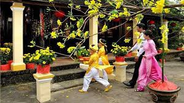

Xông đất (hay đạp đất) là phong tục lâu đời của người Việt, tin rằng người đầu tiên đến chúc Tết sau khoảnh khắc giao thừa sẽ quyết định vận hạn của gia đình trong cả năm. Với năm Bính Ngọ 2026, gia chủ thường ưu tiên chọn những người có tính cách phóng khoáng, năng động như linh vật con Ngựa, mong muốn một năm mới mọi việc tiến triển nhanh chóng và thuận lợi.
Ý nghĩa: Cầu mong sự may mắn, bình an và thịnh vượng cho cả gia đình. Cách chọn người: Chọn người hợp tuổi với gia chủ (Tam hợp: Dần - Ngọ - Tuất), người có đạo đức tốt và gia đình êm ấm.